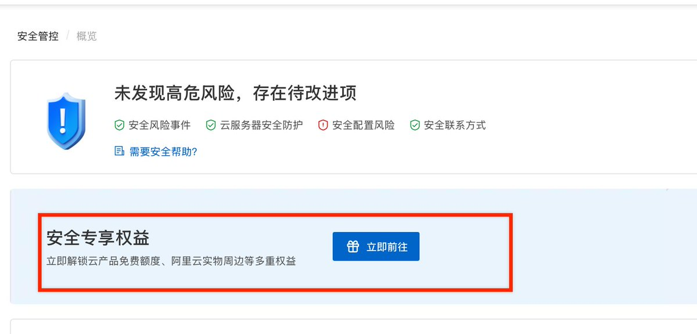
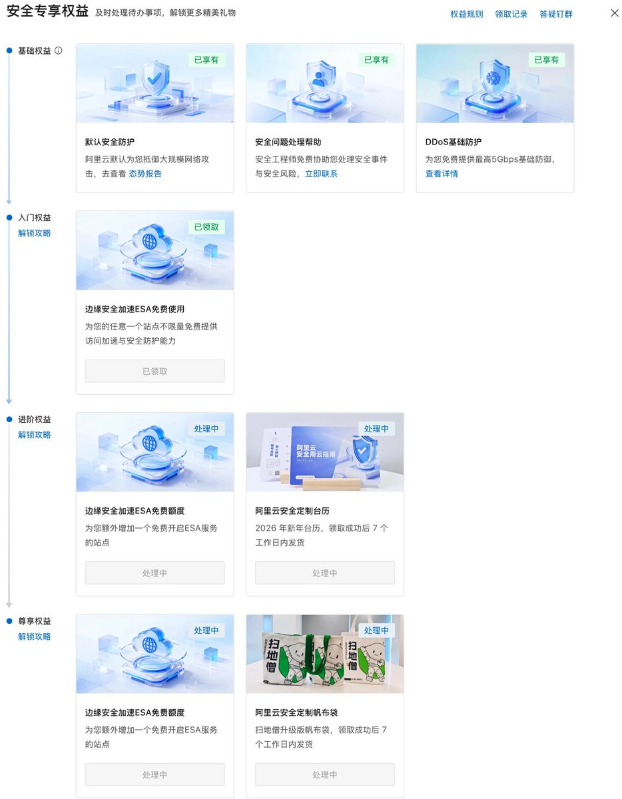
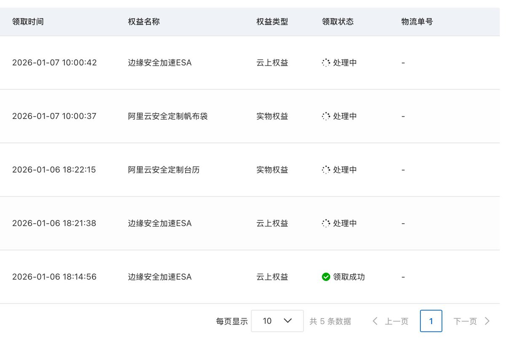

奶昔🥤
@realNyarime
阿里云安全专项权益-测安全免费领新年台历、帆布包到现在还能领，打开云盾控制台点安全专享权益，分为几个阶梯，点击左边攻略，可以看到还差哪个任务。
帆布包的任务要求必须有ECS示例，之前没有开通过服务器实例的，可以在免费试用里面领3个月。如果之前试用过了，也可以买一个按量付的那种，需要账户里有100块钱才能买，可以充值100领完帆布包，释放机器去账户吧钱提现出来🥳
老师我送的是挂历


